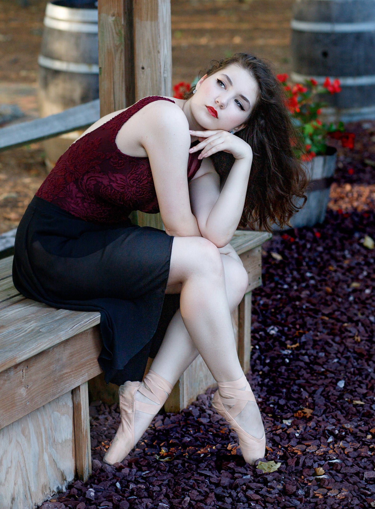

Hey-YA!My name is Victoria Nikolaeva. I am currently a sophmore in UD, majoring in their Computer Science program for a BA degree. I am honestly at a weird point of my life, many parts of my world and myself are changing. I lost some of the closest people in my life and I felt like I was in a void but what can you do, it is a part of life that I need to accept. So, this summer is going to be about self improvement and reaching out to friends that have been kind to me that I stupidly never gave the chance. This site is part of that journey of improvement. So...Thank You for stoping by! |
|
Intrests:ArtI LOVE art, I started drawing arounf the 4th grade when I was into the Sonic the Hedgehog I am into drawing characters mainly from my favortie medias; now I often use my skills for school DanceI have danced for about fourteen years. I started with ballet but moved into other styles like en pointe, modern, comptemporary, lyrical, jazz, and bits of hip-hop. Now that I have left for college I have been transitioning into yoga. Movies/FilmMy favorite comdey is White Chicks AnimationSimilar to my passion for art, animation is one of the most incrediable forms of medias and I am constantly in awe of it. My favortie animated movie currently in Into the Spider-Verse but I also love Howl's Moving Castle and many animes too. BooksWhile I am more of a movie-lover, I do enjoy books of all sorts (comics, graphic novels, poerty, fansatsy, thriller, romance); My favortie book series is The Infernal Devices series by Cassandra Clare.S |
 |